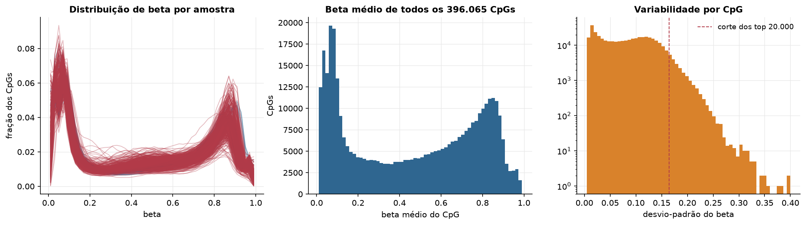
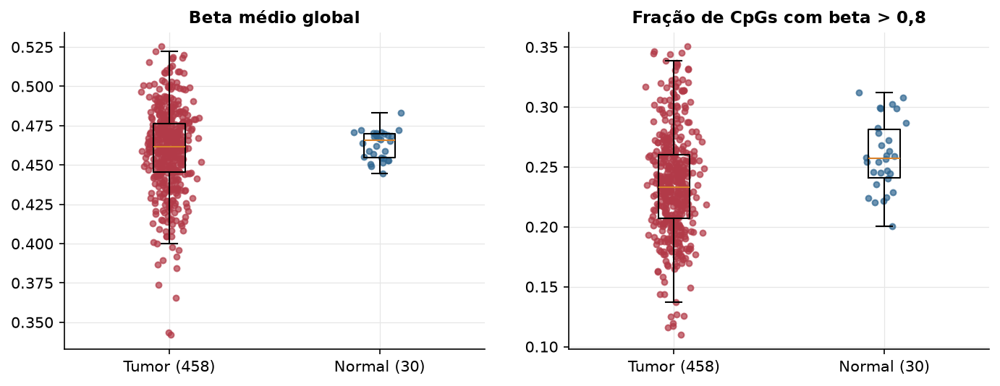
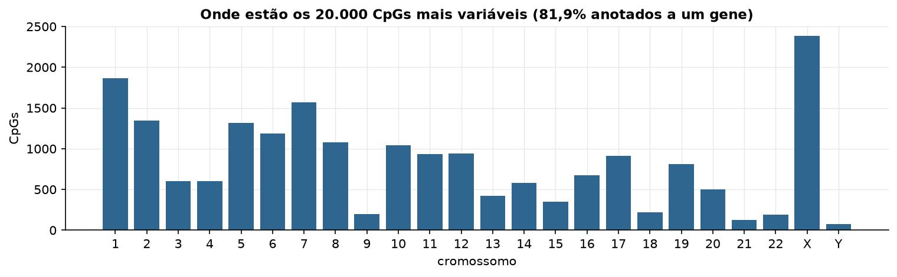
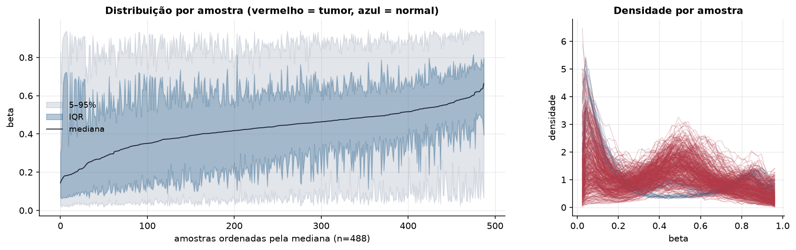
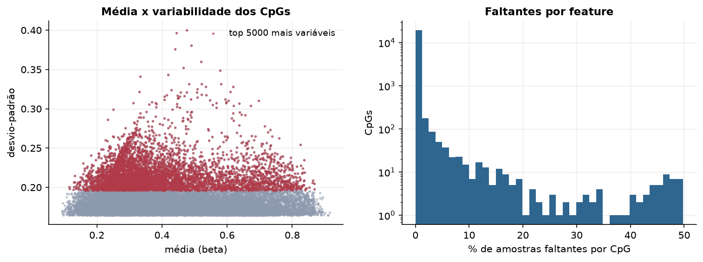
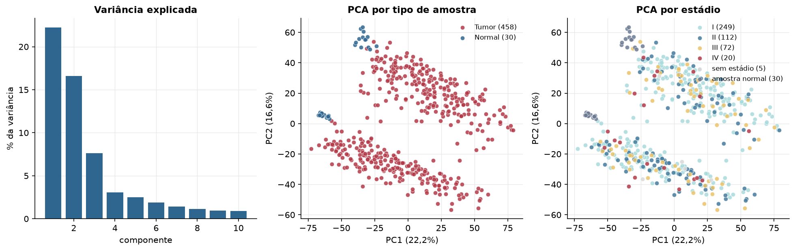
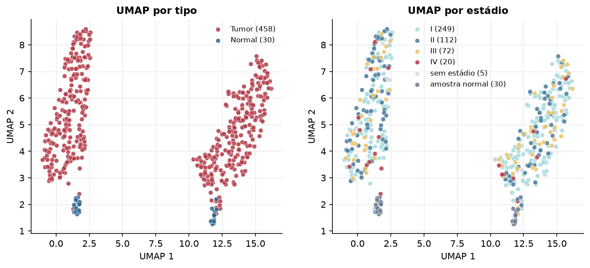
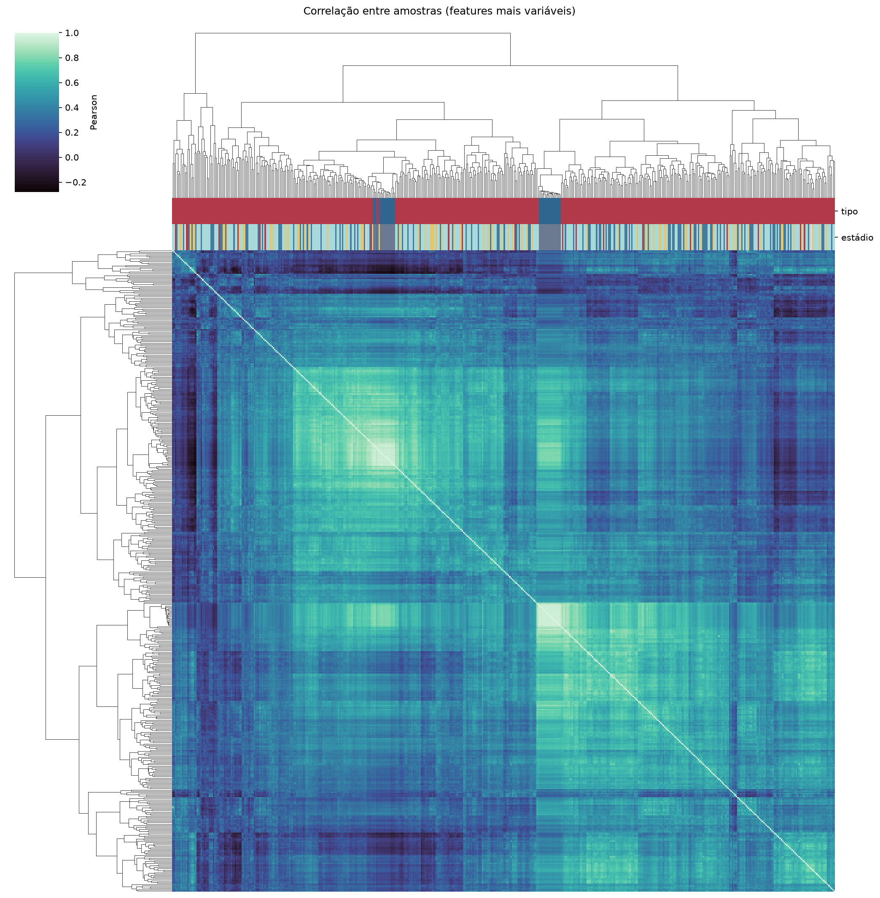
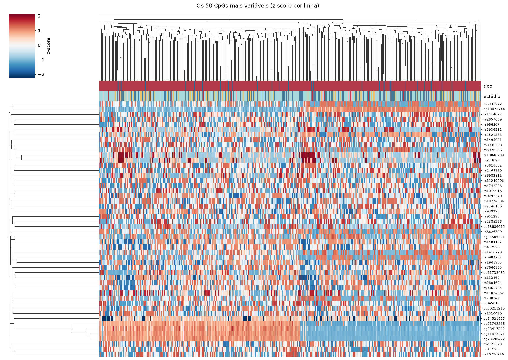
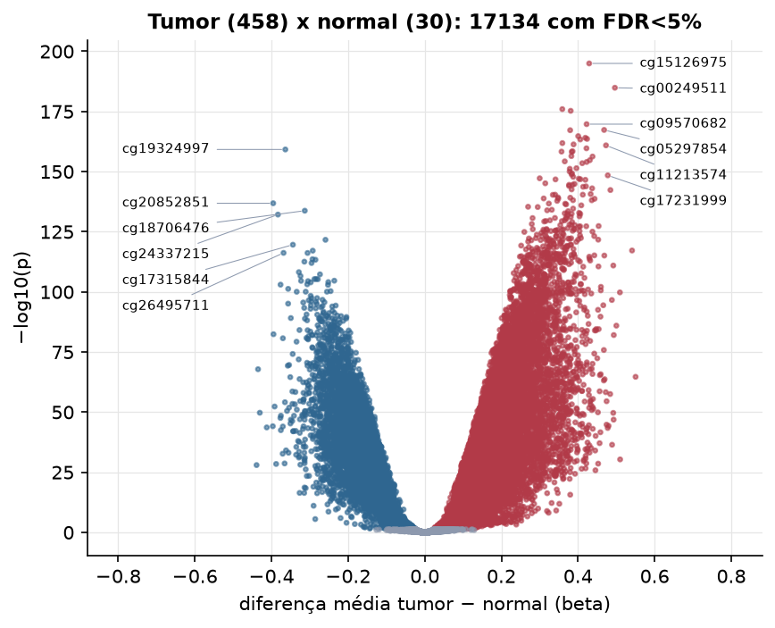

LUAD · Metilação do DNA (450k)
Illumina Infinium HumanMethylation450, valores beta (0 a 1) · gerado em 22/10/2026 01:21
396.065CpGs medidos
370.661CpGs sem faltante
20.000CpGs
458amostras tumorais
30amostras normais
0,3%valores faltantes
Fonte: PanCanAtlas HM450 via API do Xena
O array tem ~485 mil CpGs. Para não ocupar espaço, guardamos estatísticas de todos os CpGs e só os 20.000 mais variáveis para PCA, UMAP e heatmaps.
Principais resultados
- A distribuição de beta é bimodal: a maioria dos CpGs está quase toda desmetilada (perto de 0, típico de ilhas CpG em promotores) ou quase toda metilada (perto de 1, corpo gênico e regiões intergênicas). 47,3% dos CpGs têm beta médio intermediário (0,2 a 0,8).
- Beta médio global: 0,461 nos tumores e 0,466 nos normais (hipometilação global no tumor, como é comum em câncer).
- 20.000 CpGs medidos em 488 amostras (458 tumorais e 30 normais); 0,3% dos valores estão faltando.
- Os dois primeiros componentes principais explicam 22,2% e 16,6% da variância das features mais variáveis.
- Correlação mediana entre amostras: 0,41.
- Tumor x normal: 17134 CpGs diferentes com FDR < 5% (11193 maiores no tumor, 5941 maiores no normal; 27 pacientes têm o par tumor-normal).
- Mais aumentados no tumor: cg15126975, cg00249511, cg16887264, cg08089301, cg09570682, cg05297854, cg23180938, cg20114732.
- Mais reduzidos no tumor: cg19324997, cg20852851, cg18706476, cg24337215, cg21054147, cg17315844, cg06719334, cg26495711.
- Associações clínicas com p < 0,05 nos componentes principais: PC2 com estádio (p=0.046); PC1 com sexo (p=5.2e-34); PC2 com sexo (p=0); PC3 com sexo (p=2e-05); PC3 com idade (p=0.017).
Distribuição global



Exploração dos CpGs mais variáveis
Distribuição dos valores


Estrutura das amostras




Tumor x normal

Features mais diferentes entre tumor e normal
| diferenca_tumor_menos_normal | t | p | fdr | |
|---|---|---|---|---|
| cg15126975 | 0.429 | 52.247 | 1.03e-195 | 2.06e-191 |
| cg00249511 | 0.496 | 60.125 | 1.33e-185 | 1.33e-181 |
| cg16887264 | 0.359 | 47.05 | 1.02e-176 | 6.83e-173 |
| cg08089301 | 0.381 | 45.17 | 5.21e-176 | 2.6e-172 |
| cg09570682 | 0.422 | 50 | 1.84e-170 | 7.35e-167 |
| cg05297854 | 0.468 | 44.545 | 4.67e-168 | 1.56e-164 |
| cg23180938 | 0.379 | 43.065 | 6.07e-168 | 1.73e-164 |
| cg20114732 | 0.401 | 44.986 | 1.76e-165 | 4.4e-162 |
| cg25339566 | 0.419 | 44.656 | 8.35e-165 | 1.86e-161 |
| cg09513990 | 0.424 | 49.771 | 2.47e-164 | 4.95e-161 |
| cg10184983 | 0.406 | 45.552 | 4.17e-164 | 7.58e-161 |
| cg11036833 | 0.359 | 47.039 | 1.37e-162 | 2.28e-159 |
| cg09238180 | 0.388 | 42.271 | 4.78e-162 | 7.36e-159 |
| cg11213574 | 0.473 | 44.243 | 1.19e-161 | 1.7e-158 |
| cg06947913 | 0.422 | 42.702 | 2.01e-160 | 2.67e-157 |
| cg19324997 | -0.364 | -41.043 | 6.17e-160 | 7.71e-157 |
| cg18486102 | 0.386 | 40.928 | 3.32e-159 | 3.91e-156 |
| cg25191628 | 0.357 | 45.607 | 4.65e-159 | 5.17e-156 |
| cg04281464 | 0.383 | 40.836 | 5.84e-159 | 6.15e-156 |
| cg01419831 | 0.383 | 40.415 | 3.52e-157 | 3.52e-154 |
| cg22167515 | 0.438 | 57.254 | 5.29e-157 | 5.03e-154 |
| cg25881804 | 0.431 | 55.994 | 1.75e-155 | 1.59e-152 |
| cg11229513 | 0.365 | 45.803 | 5.46e-155 | 4.75e-152 |
| cg10168149 | 0.423 | 49.249 | 9.62e-155 | 8.02e-152 |
| cg26492446 | 0.411 | 39.604 | 3.17e-154 | 2.54e-151 |
| cg05311410 | 0.396 | 39.742 | 3.69e-152 | 2.84e-149 |
| cg13096208 | 0.378 | 40.331 | 6.53e-152 | 4.84e-149 |
| cg19456540 | 0.378 | 40.459 | 8.87e-151 | 6.33e-148 |
| cg26299169 | 0.384 | 43.602 | 4.89e-150 | 3.37e-147 |
| cg18786873 | 0.383 | 48.342 | 1.5e-149 | 1e-146 |
Associação com variáveis clínicas
p-valores da associação dos três primeiros componentes principais (só tumores) com estádio (Kruskal-Wallis), sexo (Mann-Whitney), idade (Spearman) e sobrevida global (Cox univariado).
| estádio (Kruskal) | sexo (Mann-Whitney) | idade (Spearman) | sobrevida OS (Cox) | |
|---|---|---|---|---|
| PC1 (21,0%) | 0.087 | 5.16e-34 | 0.17 | 0.714 |
| PC2 (15,8%) | 0.046 | 0 | 0.43 | 0.362 |
| PC3 (6,6%) | 0.604 | 2.04e-05 | 0.017 | 0.138 |